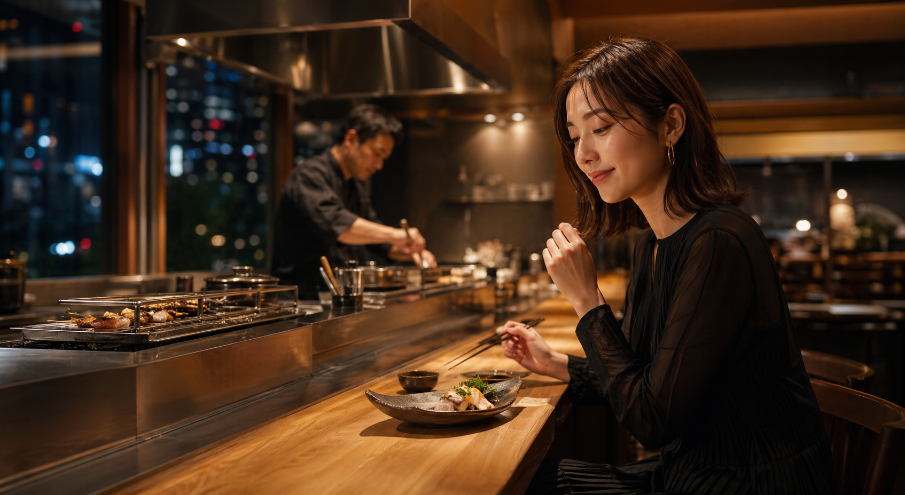

旬の炭火コース
初めてでも選びやすい定番コース。
¥5,800

Charcoal & Seasonal Dining
料理、空間、利用シーンを一気に伝えるモダン居酒屋サイト。宴会よりも大人の食事会・デート・接待に寄せたVer2です。
“何が食べられるか”より、“誰と行きたいか”が伝わる構成。
料理写真と人物の利用シーンを合わせ、来店後の体験を想像しやすくします。
接待・デート・記念日など、用途別の導線を用意します。
席、コース、空席確認を近くに置き、予約までの迷いを減らします。
Course
初めてでも選びやすい定番コース。
落ち着いた個室利用と相性の良い高単価プラン。
料理との相性を伝え、客単価アップへ。
Experience
スマホで見た瞬間に、価格ではなく体験で比較されるように設計します。
Shop
For Owner
コース、席、アクセス、空席確認を整理し、幹事や初来店客が予約しやすいサイトにします。
Contact
お店の空気感を伝え、予約につながるページをご提案します。
無料で相談する